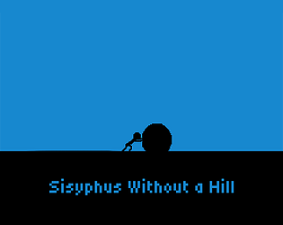
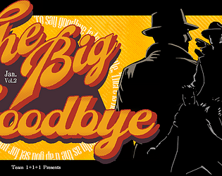
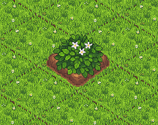
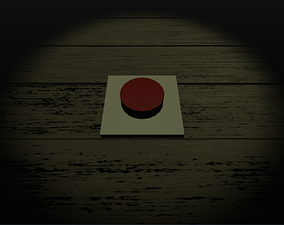
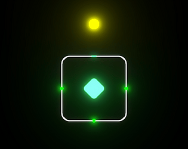

Games
-

Sisyphus Without a Hill
A Sisyphus-inspired walking simulator for Brackeys Game Jam 2026.1.
-

TheBigGoodbye
An interactive fiction game for Game Jam Theme: Inflate.
-

Harvest Survivors
A farming-style survivor-like game for Ludum Dare 58.
-

There is a button
A subtle meme game about a button that could change everything.
-

PATH
A tiny puzzle game.